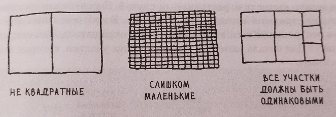
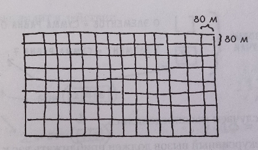

15. Стратегия "разделяй и властвуй". Квадратные участки земли.
Условие:
НУЖНО РАВНОМЕРНО РАЗДЕЛИТЬ УЧАСТОК ЗЕМЛИ НА ОДИНАКОВЫЕ КВАДРАТНЫЕ УЧАСТКИ. УЧАСТКИ ДОЛЖНЫ БЫТЬ НАСТОЛЬКО БОЛЬШИМИ, НАСКОЛЬКО ЭТО ВОЗМОЖНО. НЕ ДОЛЖНО ОСТАТЬСЯ НЕИСПОЛЬЗОВАННОГО МЕСТА НА УЧАСТКЕ.
Неподходящие варианты:

То, что надо:

Код:
"""РАЗДЕЛЯЙ И ВЛАВСТВУЙ.
НУЖНО РАВНОМЕРНО РАЗДЕЛИТЬ УЧАСТОК ЗЕМЛИ НА ОДИНАКОВЫЕ КВАДРАТНЫЕ УЧАСТКИ.
УЧАСТКИ ДОЛЖНЫ БЫТЬ НАСТОЛЬКО БОЛЬШИМИ, НАСКОЛЬКО ЭТО ВОЗМОЖНО.
НЕ ДОЛЖНО ОСТАТЬСЯ НЕИСПОЛЬЗОВАННОГО МЕСТА НА УЧАСТКЕ."""
# основная функция
def square_field_function(length, width):
if length % width * (length // width) == 0:
return (width, width) # базовый случай возвращает кортеж с размерами участка
else:
side_1 = length - width * (length // width)
side_2 = width
length = max(side_1, side_2)
width = min(side_1, side_2)
return square_field_function(length, width)
# ввод переменных
length = 1680
width = 640
# функция, которая будет вызываться рекурсивно, пока не наёдем подходящий размер квадратного участка
square_field = square_field_function(length, width)
print(f"Размер участка {square_field[0]} x {square_field[-1]}")